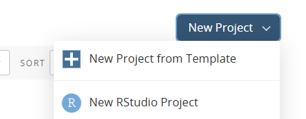
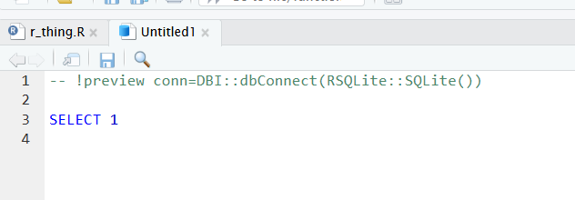
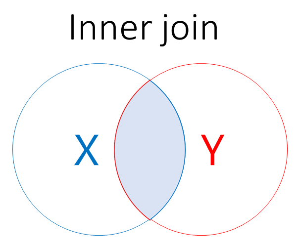
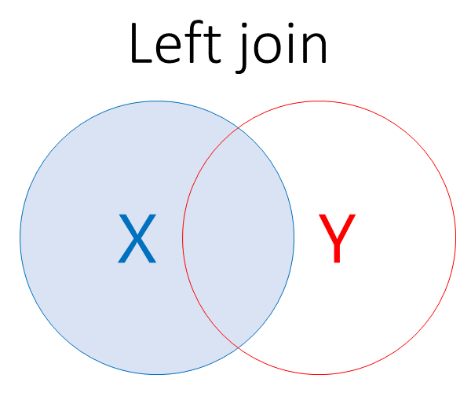

If you’re looking for a resource to use to support independent study, W3 schools is a better option than this page
this material is largely intended to support our live interactive training sessions
we use posit.cloud for this course. Although that platform is mainly meant for analysts writing R code, we can trick it to allow us to practice our SQL skills
About this session
This is a session about joins in SQL:
we’ll introduce joins in general terms
we’ll then go on to talk about different types of join in SQL
then we’ll do lots of practice of basic joins
and finish with a couple of helpful points for simplifying your work with joins
Setup
You will need a free posit.cloud account. Please set this up and check that you have access before the session begins
Once you’ve logged-in to posit.cloud, please create a new Rstudio project 
In that project, create a new R script:
Data
This session uses some sample data, which we’ll load directly from the web in our R script
Copy and paste the following R code into that script:
now create a new SQL script (again, from the File menu)
delete all the pre-populated lines of code, as follows: 
to connect with our SQL db in memory, add the following line to the head of your SQL script:
-- !preview conn=src_memdb()$con
Data structure
we’ve now got a series of SQL tables in memory
in one way and another those tables are all about pharmaceutical prescribing
we’ll start with two very simple tables, before moving on to experiment with some more real-world data
the first, practice_names contains the names and ID codes for a few GP practices:
SELECT*FROM practice_names;
4 records
PracticeCode
GPPracticeName
30951
Rubislaw Place Medical Group
30909
Albyn Medical Practice
31206
Scotstown Medical Group
30627
Links Medical Practice
the second contains some practice list sizes for these GP practices - which tell you how many patients are registered for each practice
SELECT*FROM practice_lists;
3 records
PracticeCode
PracticeListSize
30951
8038
30909
11891
31206
12344
Shared columns
both datasets share a column: PracticeCode
joins in SQL need shared column(s) to relate parts of our data together
in these tables, each PracticeCode is a unique ID for each GP practice
when we join, we match my those unique IDs, and then bring in data from an external source
A first join
for example, we could take our practice_names table, and join on the additional column found in the practice_lists table:
SELECT*FROM practice_names JOIN practice_lists ON practice_names.PracticeCode = practice_lists.PracticeCode-- take our practice_names table, and for every matching PracticeCode bring in the other column(s) from practice_lists
3 records
PracticeCode
GPPracticeName
PracticeCode
PracticeListSize
30951
Rubislaw Place Medical Group
30951
8038
30909
Albyn Medical Practice
30909
11891
31206
Scotstown Medical Group
31206
12344
to note:
there are two parts to a join. A join keyword, like LEFT JOIN which determines the logic of the join
ON which describes how the columns in our data should relate to one another. Note the table_name.column_name syntax. Call that the key
we can do several kinds of SQL join by using a different join keyword
for a table x to which we’re joining y:
JOIN: includes all rows in x and y. Also known as INNER JOIN 
Types of join
An inner join is not the only way we can join in SQL. We can also:
LEFT JOIN: includes all rows in x 
RIGHT JOIN: includes all rows in y
FULL JOIN: includes all rows in x or y
If a row in x matches multiple rows in y, all the rows in y will be returned once for each matching row in x.
Prescribing data
as well as our practice_names and practice_lists tables, we’ve got some more interesting data set up in our SQL database about prescriptions
NoteExercise
inspect the following tables:
gp_practices
hbt
ab_city_presc
bnf_data
there are several possible joins we might attempt here: please make a suggestion about a join you’d be interesting in trying in the chat
A starting join
look at the ab_city_presc table, which is contains data about prescriptions in the Aberdeen City area
this is hard to read because the drug information in the BNFItemCode column is expressed as codes (like 1202010Y0BBAAAA) rather than drug names
luckily, bnf_data is a lookup: the corresponding column in that table is bnf_presentation_code
SELECT*FROM ab_city_presc JOIN bnf_data ON ab_city_presc.BNFItemCode = bnf_data.bnf_presentation_code;
Sodium chloride 0.9% neb liq 2.5ml unit dose ampoules
30030
19875
20
Otomize ear spray
The AS keyword
as you might have noticed above, you end up writing the names of tables a couple of times during a join
our tables have slightly long and tricky names
you can temporarily rename tables using AS:
SELECT GPPractice, PaidDateMonth, PaidQuantity, bnf_presentation FROM ab_city_presc AS abJOIN bnf_data AS bnfON ab.BNFItemCode = bnf.bnf_presentation_code;
Sodium chloride 0.9% neb liq 2.5ml unit dose ampoules
30030
19875
20
Otomize ear spray
Multiple joins
say you’d like more information about the GP practices. That can be brought in from the gp_practices table with a second join:
SELECT GPPracticeName, PaidDateMonth, PaidQuantity, bnf_presentation FROM ab_city_presc AS abJOIN bnf_data AS bnfON ab.BNFItemCode = bnf.bnf_presentation_codeJOIN gp_practices AS gp ON ab.GPPractice = gp.PracticeCode
Displaying records 1 - 10
GPPracticeName
PaidDateMonth
PaidQuantity
bnf_presentation
Garthdee Medical Group
20148
8
Sofradex ear/eye drops
Garthdee Medical Group
20179
20
Sofradex ear/eye drops
Garthdee Medical Group
20209
10
Sofradex ear/eye drops
Garthdee Medical Group
19875
20
Otomize ear spray
Garthdee Medical Group
19905
5
Otomize ear spray
Garthdee Medical Group
19936
15
Otomize ear spray
Garthdee Medical Group
19967
5
Otomize ear spray
Garthdee Medical Group
19997
10
Otomize ear spray
Garthdee Medical Group
20028
30
Otomize ear spray
Garthdee Medical Group
20058
5
Otomize ear spray
Prescribing data info
Show data creation script
# this script takes open data about prescribing in Scotland, and produces a small and interesting subset of ENT prescriptions from Aberdeen City GPs June 2024-May 2025 # it's designed purely for training purposes. In the KIND network we're using it for our introductory SQL course, for example.# this dataset starts with the twelve monthly files by prescriber location covering June 2024-May 2025: https://www.opendata.nhs.scot/dataset/prescriptions-in-the-community. These are downloaded locally - see note below# you can find supporting information in the data glossary https://publichealthscotland.scot/media/34209/open_data_glossary_of_terms.pdf# you may also find the openprescribing site helpful about BNF codes: https://openprescribing.net/bnf/040702/# and more BNF info from the NHSBSA website - https://applications.nhsbsa.nhs.uk/infosystems/welcome (guest login needed but free and open to all)library(dplyr)library(readr)## bnf info ----bnf<-"https://opendata.nhsbsa.net/dataset/29d25de3-02cd-4755-9dee-cdc37e37b5f3/resource/b1ce568d-37c4-4dd6-8bf4-57e4b044bf6c/download/bnf_code_current_202507_version_88.csv"bnf_data<-read_csv(bnf)|>filter(BNF_CHAPTER=="Ear, Nose and Oropharynx")|>rename_with(tolower)|>select(-year_month)|>relocate(bnf_presentation_code)ent<-bnf_data|>pull(bnf_presentation_code)# subset of ENT-specific codes## get the GP practice info for Aberdeen city----jul_2025<-"https://www.opendata.nhs.scot/dataset/f23655c3-6e23-4103-a511-a80d998adb90/resource/30b06220-17ad-44e8-b6c5-658d41ec1ea5/download/practice_contactdetails_jul2025-open-data.csv"gp_practices<-read_csv(jul_2025)|>filter(str_detect(GPCluster, "Aberdeen City"))gps<-gp_practices|>pull(PracticeCode)## get the health board lookup----hbt<-read_csv("https://www.opendata.nhs.scot/dataset/9f942fdb-e59e-44f5-b534-d6e17229cc7b/resource/652ff726-e676-4a20-abda-435b98dd7bdc/download/hb14_hb19.csv")|>select(HB, HBName)## build the dataset ----ab_city_presc<-read_csv(list.files("data/community_presc/", full.names =T))|># directory of monthly files downloaded from https://www.opendata.nhs.scot/dataset/prescriptions-in-the-communityfilter(GPPractice%in%gps)|>filter(BNFItemCode%in%ent)|>select(GPPractice, PaidDateMonth, BNFItemCode, PrescribedType, NumberOfPaidItems, PaidQuantity, GrossIngredientCost)|>mutate(PaidDateMonth =ym(PaidDateMonth))|>mutate(PaidDateMonth =as.character(PaidDateMonth))ab_mini<-gp_practices|>select(PracticeCode, GPPracticeName, PracticeListSize)|>slice_sample(n =3)practice_names<-ab_mini|>select(-PracticeListSize)|>bind_rows(tibble(PracticeCode =30627, GPPracticeName ="Links Medical Practice"))practice_lists<-ab_mini|>select(-GPPracticeName)practice_names|>inner_join(practice_lists)list(ab_city_presc =ab_city_presc, bnf_data =bnf_data, gp_practices =gp_practices, hbt =hbt, practice_lists =practice_lists, practice_names =practice_names)|>write_rds("data/prescribing_data.rds")